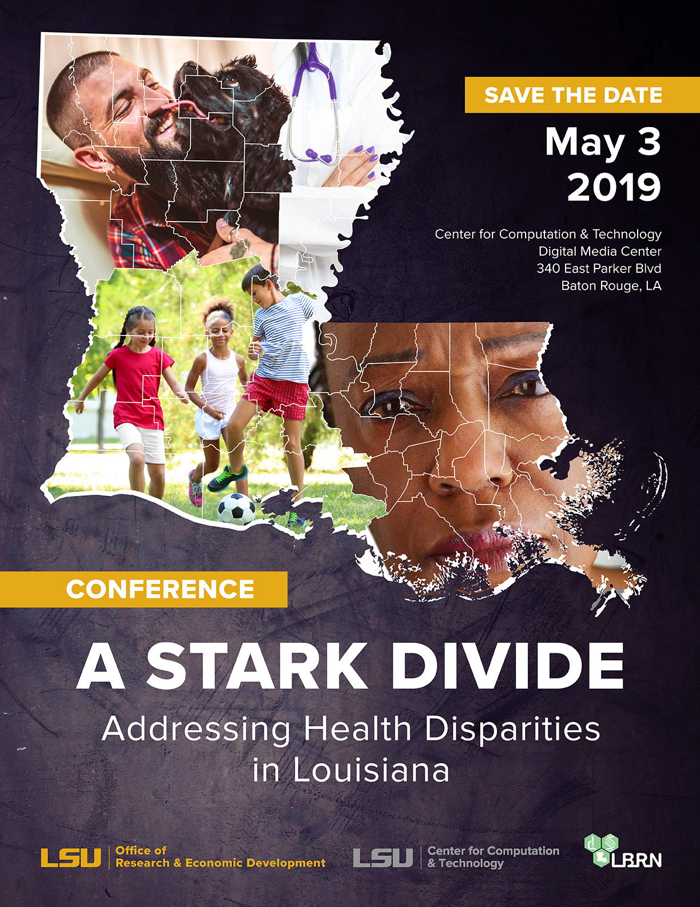

Louisiana is ranked near the bottom of all states in overall health. Substantial health disparities exist among minority and rural groups of people in incidence, prevalence, mortality, and burden of disease. Health and well-being disparities exist across racial and ethnic origin, as well as gender, sexual orientation, age, disability status, socioeconomic status, and geographic location. A systematic approach is needed to define major health disparities and well-being issues and generate and implement strategies to address these issues. LSU is committed to improving the health, well being, and longevity of Louisiana citizens through organized research, education and intervention strategies. The Health Disparities and Well-being Conference has three main goals: Outline the health disparities problem, Highlight current LSU and community efforts towards addressing health disparities, Foster collaborations to help develop and implement new intervention strategies. The Conference is open to all those interested to attend including the public. Registration is now open. Those registered will be receiving boxed lunch free of charge.
The Organizing Team
This year's conference is being held on {{page.eventDate}} in Baton Rouge, Louisiana at the {{page.eventLocation}}.
Directions to the 2019 Conference - the conference is being held within the LSU Digital Media Center. When you enter the building (follow the signs when you approach the building to the front door, there is a round reception desk, go to the right down the hall to the conference room. There are restrooms nearby. Baton Rouge Traffic is notoriously difficult in the morning across the I-10 Mississippi bridge if you're coming from the north, actually taking the old bridge is a viable alternative. Coming from New Orleans or I-12, we recommend taking the Acadian Exit to go down Stanford and then by the lakes, and then turning left in front of the LSU Emerging Tech Center and then right into the Parking Lot for CCT. Be sure NOT to park in any red marked lots, the regular spaces are fine.
Do NOT Park on lake side of building. There will be an attendant/parking officer in the lot behind CCT. The officer will have a list of names. Tell the attendant that you are part of the conference, and they should let you into the parking area that I reserved. They will give you a tag to hang in your vehicle so you won’t get towed.
{kind=link}